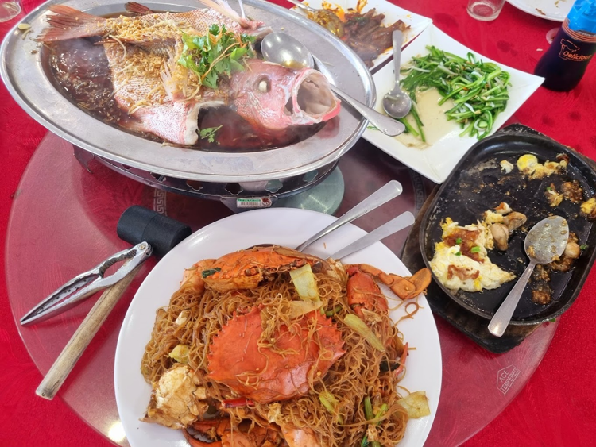

Food plays an important role in the identity of Tanjung Sepat. The town is well known for its fresh seafood, traditional Hainanese coffee, handmade buns, and locally produced snacks enjoyed by visitors from across Malaysia.
Many family-owned restaurants and cafés have preserved their recipes for generations, creating authentic flavours that reflect the history and multicultural heritage of the local community.
Whether you're looking for a hearty seafood meal, a relaxing cup of coffee, or traditional pastries, Tanjung Sepat offers a memorable culinary experience for every visitor.
Taste some of the most popular foods that have made Tanjung Sepat a favourite destination for food lovers.
Freshly caught fish, prawns, crabs and shellfish prepared using local recipes.
A rich traditional coffee served in charming local coffee shops.
Soft steamed buns with a variety of sweet and savoury fillings.
Discover locally made crackers, biscuits, and homemade delicacies.
Enjoy freshly prepared seafood at restaurants along the coast.
Relax at traditional cafés while enjoying Hainanese coffee.
Purchase handmade snacks and local food products as souvenirs.
Share delicious meals with family and friends in a welcoming atmosphere.
Tanjung Sepat is famous for its rich culinary heritage. From freshly caught seafood to traditional handmade delicacies, these local specialties have become must-try experiences for visitors.
Seafood lovers can enjoy freshly caught prawns, crabs, fish, squid and shellfish prepared using local recipes.
Brewed using traditional roasting techniques, Hainanese coffee is known for its rich aroma and smooth flavour.
Soft steamed buns with sweet and savoury fillings prepared fresh every day by local bakeries.
Discover homemade crackers, biscuits and local delicacies that showcase the flavours of Tanjung Sepat.
Explore some well-known places where visitors can experience the authentic flavours of Tanjung Sepat. The locations below are provided as examples for educational and informational purposes only.
Traditional Coffee Shop
Famous for its traditional Hainanese coffee, toast, and nostalgic kopitiam atmosphere that has attracted both locals and tourists for many years.
Café & Local Products
A popular destination known for dragon fruit-based products including juice, ice cream, desserts, and freshly harvested fruits.
Seafood Dining
Enjoy fresh seafood prepared using local recipes, featuring fish, prawns, crabs, squid, and shellfish sourced from nearby fishing villages.
Traditional Bakery
Handmade steamed buns with a variety of sweet and savoury fillings that have become one of Tanjung Sepat's most popular local delicacies.
Make the most of your culinary journey in Tanjung Sepat with these helpful tips and recommendations.
Visit during lunch or dinner hours to enjoy freshly prepared seafood and local delicacies.
Explore cafés, seafood restaurants, bakeries and local snack shops throughout the town.
Handmade biscuits, crackers, coffee and traditional snacks are popular souvenirs.
Weekends are usually busier. Arriving earlier can help you avoid longer waiting times at popular eateries.
Food is more than just a meal in Tanjung Sepat—it reflects the town's history, traditions, and strong community spirit. Here are a few interesting facts about its local cuisine.
Hainanese coffee has been enjoyed in Tanjung Sepat for generations and remains one of the town's most recognised local beverages.
Fresh seafood is supplied daily by nearby fishing communities, ensuring restaurants serve high-quality local ingredients.
Handmade steamed buns have become one of the most popular souvenirs for visitors exploring Tanjung Sepat.
Tanjung Sepat is also known for dragon fruit farms that produce fresh fruit, desserts, beverages, and locally made products.
Explore the cafés, seafood restaurants and local food shops around the heart of Tanjung Sepat.
"The flavours of Tanjung Sepat tell the story of its people, where fresh ingredients, family traditions, and warm hospitality come together to create unforgettable culinary experiences."